鸭鸭羽绒服，是创立于 1972 年的国民羽绒服品牌，是华与华方法在服装行业，成功塑造的“大规模全民品牌”典范案例。本期文章我们将为你重点解析：华与华是如何为生产出中国第一件羽绒服的老国货品牌，注入时尚语言，打造既卖货又积累品牌资产的品牌设计的。本文核心内容：1 、服装品牌标志设计，要传达的是品牌的战略意图；2 、如何把明星广告做得更时尚？鸭鸭产品海报设计拆解；3 、如何激发“想穿感”？鸭鸭 4 款产品详情页设计思路拆解。
鸭鸭，一个刻入几代人记忆的老国货品牌，是 70 、 80 年代的时代符号，承载着深厚的国民记忆，那一抹温暖的红色，定格了中国羽绒服的开端和历史温度。进入 21 世纪，鸭鸭重返大众视野，在当代的消费语境和视觉习惯中，再看到这个标志，感受到的是一股“年代感”，品牌面临的是一场“沟通困境”。从品牌标志、品牌海报，到电商视觉与线下门店，整体缺乏统一的品牌形象，同时缺少符合当代审美的时尚感。
黑格尔把艺术的美分成 3 个阶段：浪漫艺术、象征艺术和古典艺术。华与华的超级符号经典美学，就是古典艺术，追求的美是足够经典，能跨越时间的，而不是追潮流的美。

鸭鸭品牌字标：弃繁从简让“ YAYA ”成为高质平价的全人类品牌服装品牌标志设计，传达的是品牌的战略意图鸭鸭原有的品牌字体，是一套带有 70 / 80 年代手写韵味的旧式字体，笔画中带有装饰性的衬线，给消费者留下“老字号”和“年龄感”的刻板印象。2020 年鸭鸭股份重组后，品牌给消费者留下的印象，是“传统羽绒服品牌”，产品以“中老年款式为主”
2021 年，华与华与鸭鸭合作，明确了品牌全球化战略，让鸭鸭从“老字号国产品牌”进阶为“全人类品牌”。鸭鸭全球化视觉语言的第一步，就是重新设计品牌字标，把字体由复杂改为简约，从有风格改为无风格的无衬线体。
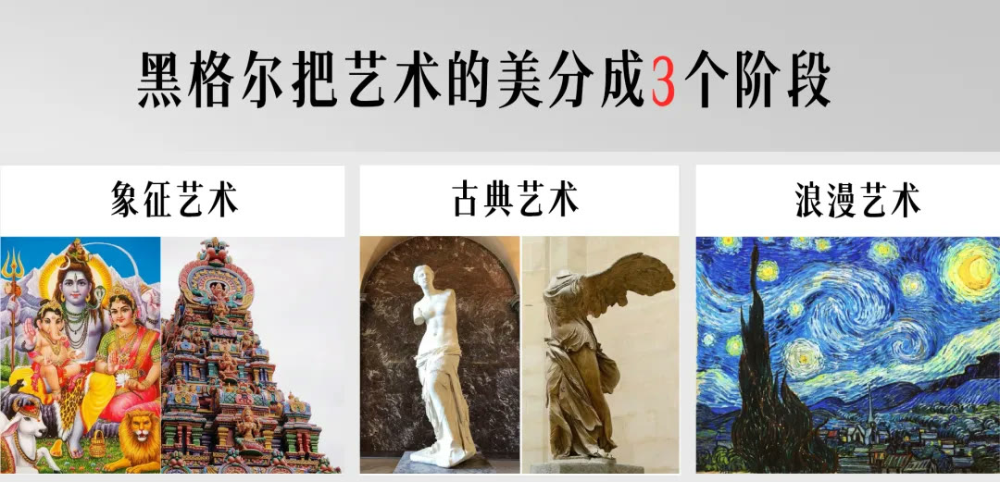
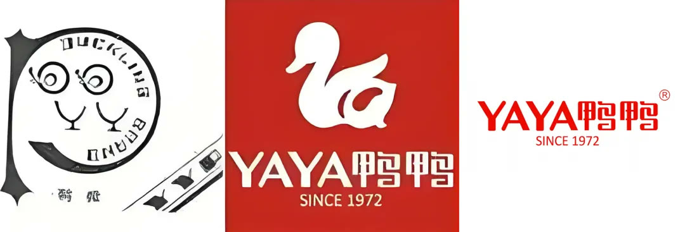
因为干净、利落的无衬线体，没有时间感、年代感和地域感，是全球最通用的字体体系。没有风格才能形成让所有人都接受的“风格”，这也更符合鸭鸭羽绒服覆盖全年龄段人群的产品定位。对于服装品牌来说，经营品牌，就是在经营超级符号修改后的 YAYA 四个字母，以硬朗且流畅的无衬线体呈现，去掉了冗余的花笔和转角弧度，符合全球化审美，突破品牌全球化沟通的屏障。鸭鸭的品牌名，本身是一个生俱来的超级符号，是鸭叫声的拟声叠音词，字形也是对称的YAYA ，全世界都认识，中英文发音一致。放眼观之，这与 Google 、优衣库等全球品牌及时尚奢侈品大牌，近几年摘掉古典字体，转向无衬线字体的趋势不谋而合。通过对汉字、英文复杂笔画做减法，打造极具当代高级感、能够跨越语言隔阂的国际符号体系。
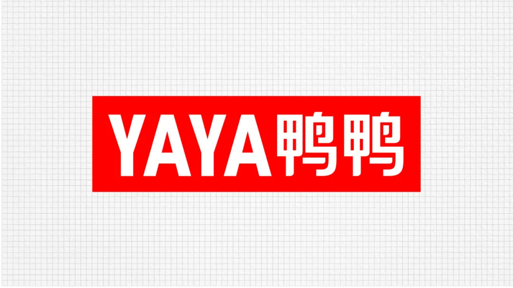
标字就是标志， YAYA 鸭鸭就是品牌的超级符号。我们把这个极具当代高级感的无衬线体字标，醒目的应用于鸭鸭电商头图的核心视觉位，成为电商货架上，具有高品牌识别度的符号。在线下，我们把鸭鸭的字标极致拉大，铺满全球旗舰店的门头，巨大的 YAYA 如地标般矗立，用品牌超级符号宣告：鸭鸭是一个拥有全球自信的羽绒服品牌。
▲鸭鸭羽绒服全球旗舰店门头
鸭鸭品牌的文化母体是“杂志封面”为品牌赋予时尚权威和格调服装品牌往往靠找明星代言，既放大了明星的时尚话语权和公众影响力，也是给衣服找到高势能的 Super Model 。很多品牌请了明星，广告画面只停留在“谁穿了”的浅层曝光，但视觉构图上，缺乏品牌自身专属的符号记忆。那么，如何把明星广告，进一步做得更时尚呢？
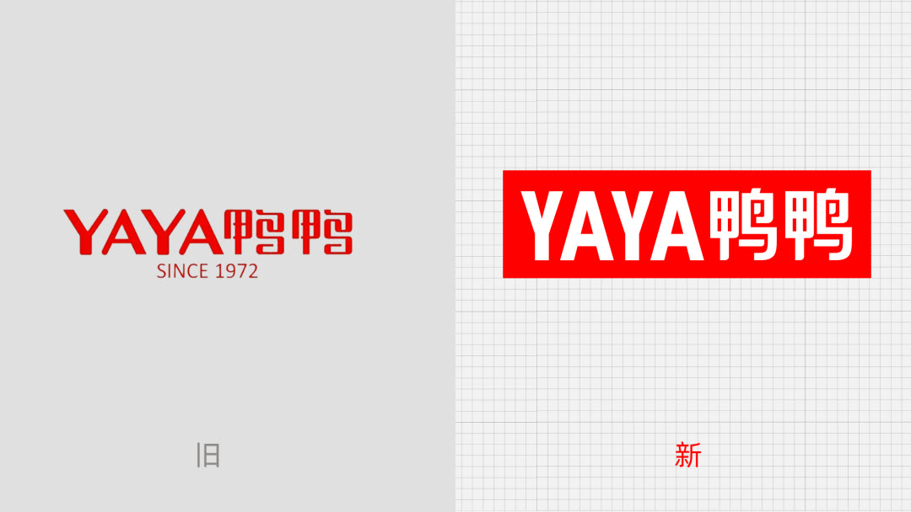
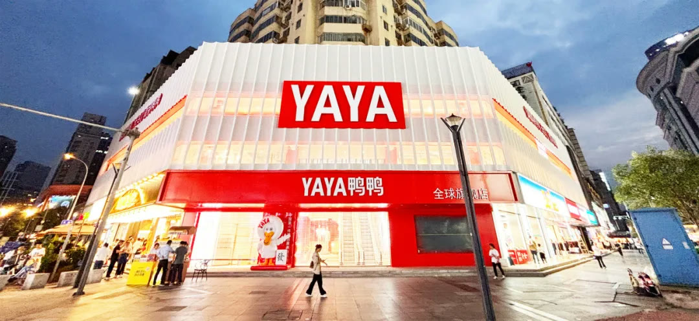
华与华方法是：寻找文化母体，进行品牌寄生。在人类共同的文化契约中，锁定那个最具时尚权威的符号。我们为鸭鸭找到时尚的文化母体，定义全球时尚风向标媒介符号——“时尚杂志封面”。在时尚消费语境中，杂志本身就是高质感的审美背书，就像电影《穿 Prada 的女王》所刻画的：杂志定义审美、颁布潮流，掌握着真正的时尚话语权。我们巧妙地将杂志封面的排版，应用到代言人的海报设计中：极致拉大对称的“ YAYA ”，让品牌名成为画面的绝对视觉中心。再结合不同季节和服装款式的不同，设计变换背景的色调、风格及光影质感，使每一张海报，都成为一张独立的时尚大片。
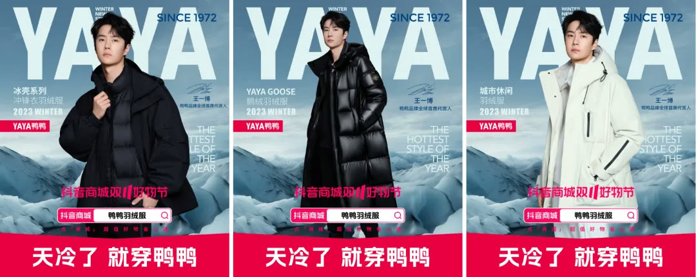
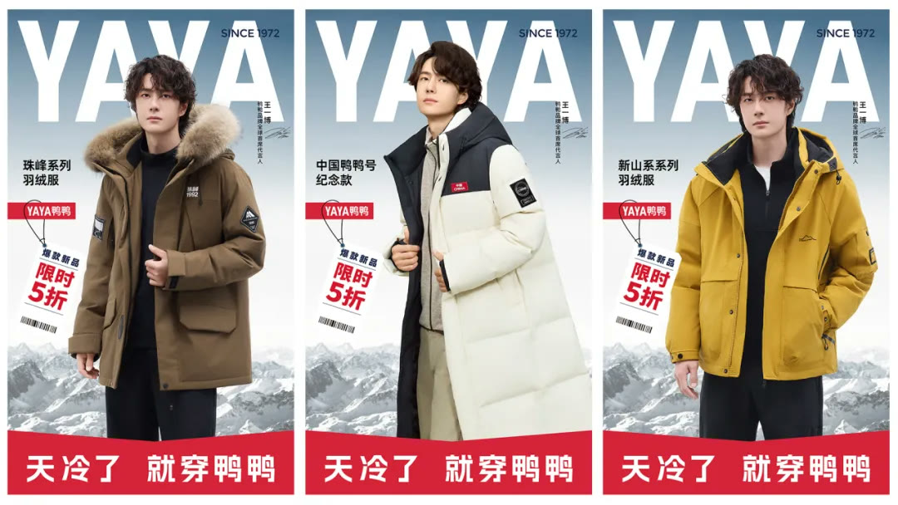
这套“杂志封面”风格的代言人海报，连续 5 年投放楼宇梯媒，让路人看到的，不是传统的羽绒服广告，而是一本本“羽绒服时尚杂志”。
更有趣的是，去年我们走进鸭鸭品牌的故乡，去到江西共青城的博物馆时，发现了一个奇妙的巧合，在鸭鸭 80 年代的老海报画面上，也应用了“ YAYA ”杂志版头式的设计，那一刻真切的感受到，经典与时尚，从来不是反义词。
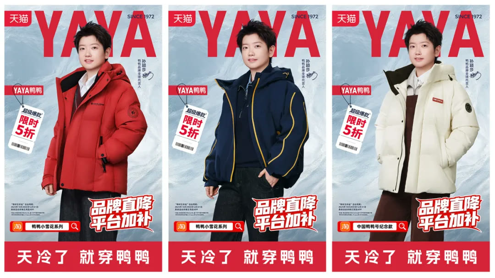
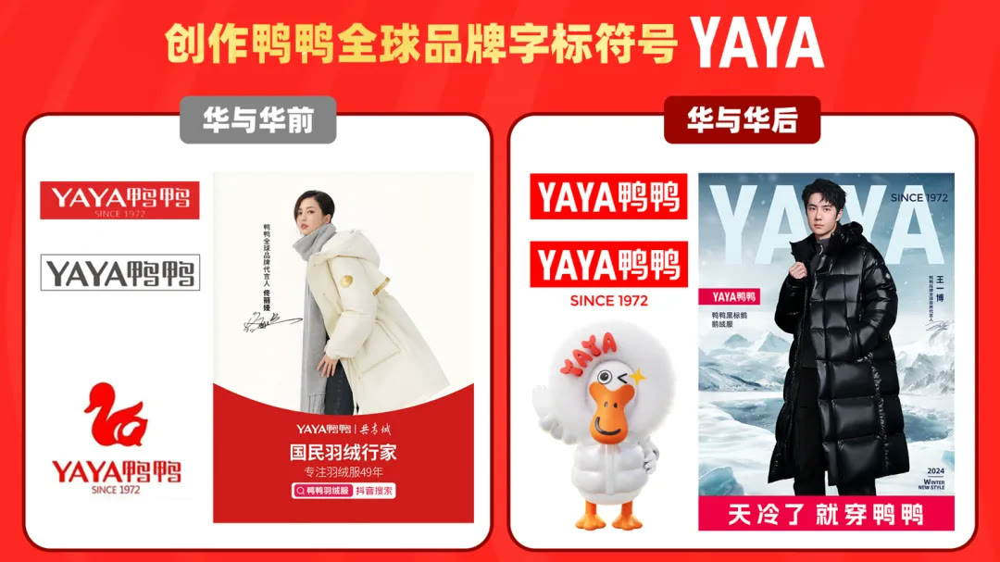
鸭鸭详情页设计：羽绒服的“场景剧场”用沉浸式叙事引爆想穿感建立鸭鸭“冷感美学”：用设计语言放大购买理由鸭鸭的品牌谚语是“天冷了，就穿鸭鸭”，这背后是鸭鸭一套完整的产品哲学。在产品结构上，我们延续品牌最大的文化母体，将鸭鸭羽绒服的不同系列，按照小冷、中冷、大冷、超冷，进行产品品类品牌化的封装。这不仅是产品开发的结构，更是传达给消费者，对应一年的不同季节，每年需要 4 件羽绒服的购买理由：从初秋到深冬，从湿冷到极寒，鸭鸭为你配齐一整个冬天的衣橱。在设计端，我们要做的不是简单展示产品，而是打造一套属于鸭鸭的“冷感美学”——让每一件羽绒服，在屏幕里，就能让你“感觉到冷，更想穿上它”。
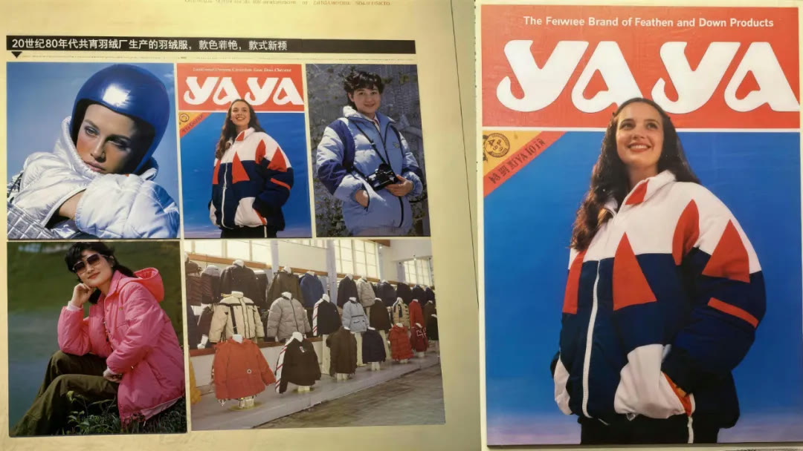
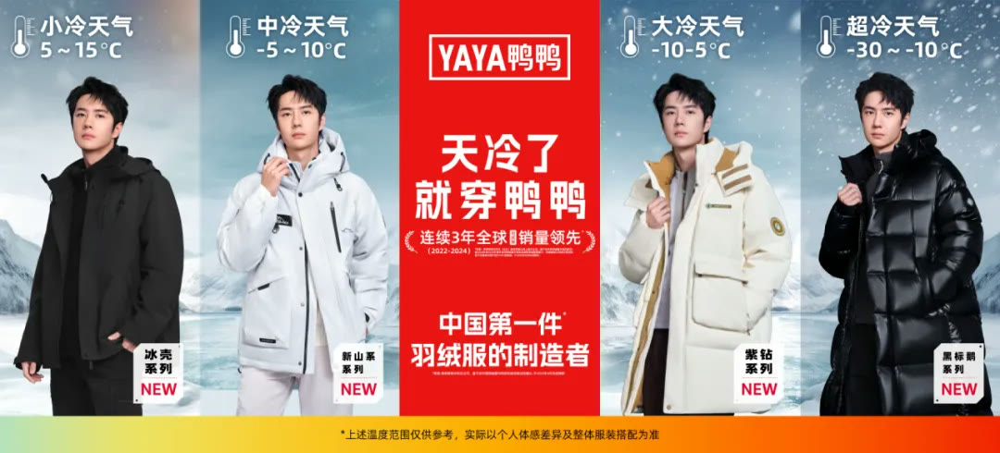
亚里士多德对美进行定义：“美就是至善，达到目的就是美。”施莱格尔也说：“美是令人愉悦的善的表现。”在设计的语境中，美这句话可以翻译为：一个设计是否“美”，取决于它是否完整地实现了自身的目的。
对餐饮设计而言，目的是要让消费者产生“食欲”；对服装设计而言，目的就是让消费者看到就想穿，我们称之为“想穿感”。鸭鸭的详情页设计，正是以“激发想穿感”为至善目标，用视觉语言构建温度剧场。电商详情页就是产品说明书：定制系列化沉浸式详情页，制造想穿代入感在电商时代，电商详情页是体现品牌价值感的关键接触点，直接影响点击率和转化率。以往羽绒服的详情页相对千篇一律：白底背景、模特摆拍、产品参数，难以激发消费者的购买欲望。在鸭鸭项目上，我们将“产品开发就是创意购买理由”的方法论，延伸到了详情页的视觉构建中。针对鸭鸭庞大且风格及功能多元的产品矩阵，我们并没有统一的套模版，而是按照“不同风格、不同冷度、不同穿着场景”，为每个系列定制沉浸式详情页。从背景氛围、到字体选择，从模特动作到情绪表达，每一个画面都围绕着产品的“想穿感”进行设计。小冷天气：轻盈换季，保暖有型的都市美学小冷天气的核心穿着诉求是，天气转凉，既不想穿得太厚，但又希望时尚和保暖兼得。这时候消费者还不需要抵御严寒，需要“轻盈、不压身、好搭配”，所以这些产品详情页的设计要告别传统羽绒服的厚重，塑造专属换季的轻盈温暖美学。
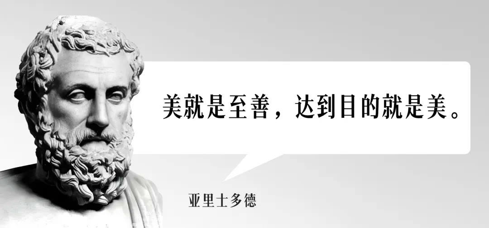
每年鸭鸭最早与消费者见面的，是超轻盈的软壳轻羽绒「鸭鸭轻壳」，产品的口号是“换季第一件，小冷穿轻壳”。1 ）在详情页的拍摄场景上：采用低饱和度色系，模拟早春或初秋的户外光感，背景点缀微微泛黄的山丘，传递秋高气爽、暖而不燥的视觉氛围。
2 ）在排版上：留白充足，营造呼吸感，主标题使用倾斜体，仿佛被秋风微微吹动。3 ）在模特的动作设计：采用动态抓拍，跳跃、伸展、侧身奔跑，通过动作暗示，这件衣服几乎没有重量。模特的脸上，是轻松自在的笑容，仿佛在说“秋天真舒服”。通过这些设计，让消费者自然代入，在换季微寒时的出游与城市通勤场景，产生我也需要这件轻壳的“想穿感”。
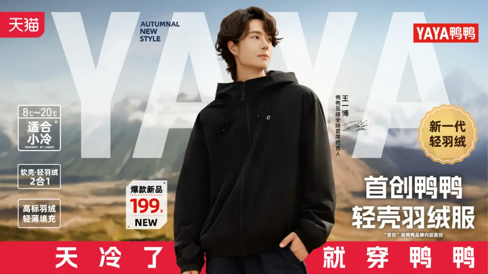
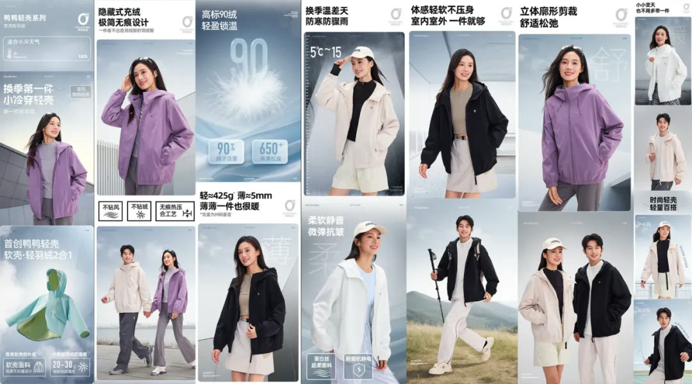
此外，鸭鸭每年还会推出一款爆品——双拼材质的轻羽绒，例如针织衫和轻羽绒双拼、卫衣和轻羽绒双拼，我们为这款产品创意的口号是“鸭鸭双拼轻羽绒，时髦又轻松”。为了在视觉上表达服装“双拼”的创新戏剧性，海报设计也采用了双拼版式，让画面本身成为产品概念的延伸。
中冷天气：风雨湿冷天气的防水美学应对中冷天气，消费者的核心痛点是：南方湿冷、秋雨冬雨连绵，打伞麻烦，普通羽绒服又不防水。尤其是近年来户外热逐渐升温，大家开始走向川西等湿冷多雨的户外场景。「鸭鸭冰壳」是真冲锋衣级，具备暴雨级防水性能的冲锋衣羽绒服。我们创意的口号是：“穿上鸭鸭冰壳，从此下雨不打伞”。在设计上就用极致的视觉语言，表达“敢在暴雨里走，彻底扔掉伞“的底气。1 ）在详情页的背景上：直接搭建“暴雨城市”场景，深灰色街道，飞溅的雨滴，代言人肩膀上，有水珠真实溅射的效果。代言人被一把把撑开的伞包围，自己却完全不撑伞，全身干爽，从容不迫。
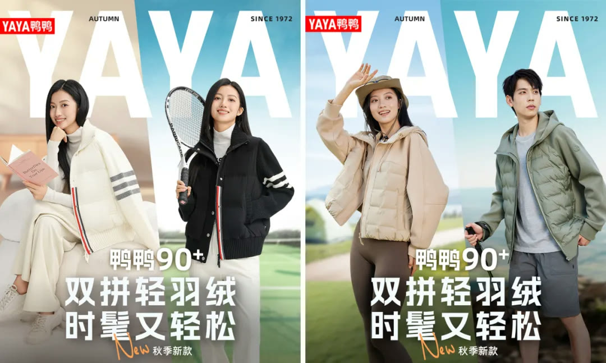
2 ）在画面字体使上：用有力量感的、略带粗旷的无衬线字体，用冰冻材质特效表达“冰壳”产品命名的戏剧感。“暴雨级防水”用巨大的立体字冲出画面，配合水花四溅的动效，强化视觉冲击力。
3 ）在模特展示上：模特不再是优雅的都市白领，而是一个“敢闯敢野”的户外行动派。模特的情绪是自信和洒脱的，用情绪表达，穿上鸭鸭冰壳的雨中超能力。我们通过让模特展示 3 种不同穿法，表达“一件鸭鸭冰壳，驾驭 3 种天气”，一衣多穿的价值点，让消费者在不同天气下，都能找到搭配灵感，进一步放大购买理由。
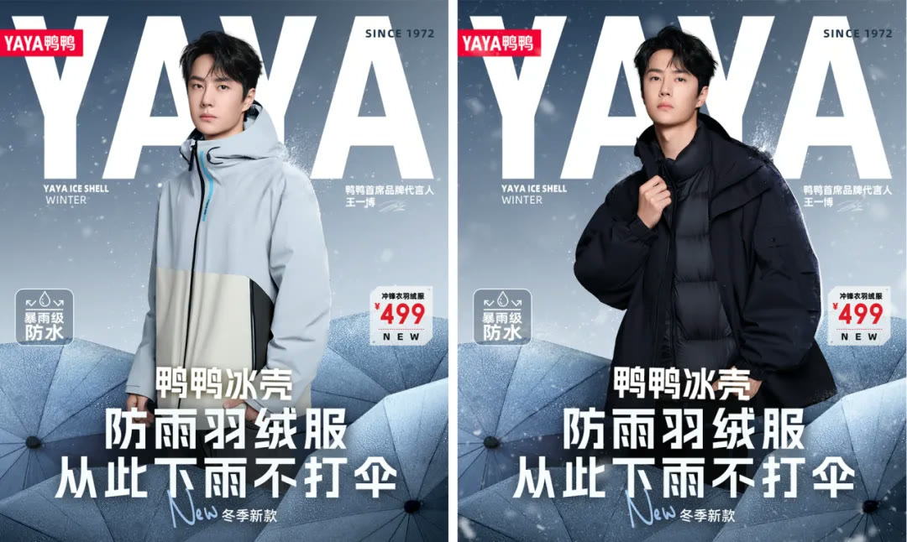
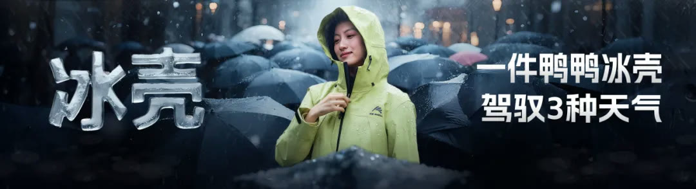
大冷天气：高奢感保暖美学，诠释凛冬与气场大冷场景对应的是深冬，此时消费者要的，不是裹得臃肿厚重，而是保暖同时“穿得高级，自带气场”，鸭鸭黑标鹅的定位是“奢感超模鹅绒服”，产品详情页要营造一种“大秀 T 台”的时尚感。我们创意的口号是“鸭鸭黑标鹅，鹅绒服超模”，上市第一年，我们特邀超模梅耶马斯克、瞿颖、张亮出镜代言。1 ）在背景设计上：不再使用户外的自然场景，而是采用影棚级的黑灰纯色背景，使用大面积侧逆光、伦勃朗光打在模特身上，让黑色羽绒服面料，呈现细腻流动的光泽感。2 ）在画面背景上：我们大胆的选用了暗红色，与黑色羽绒服做强烈撞色，借助光影营造出高级奢华的视觉氛围。
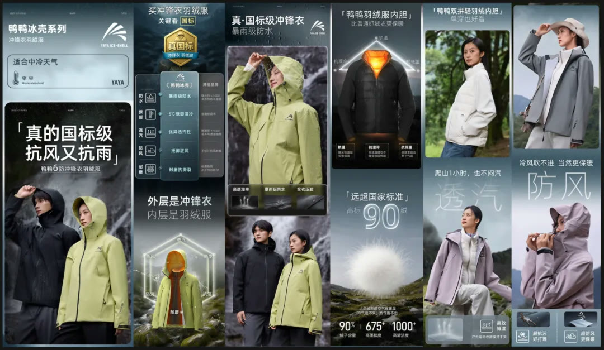
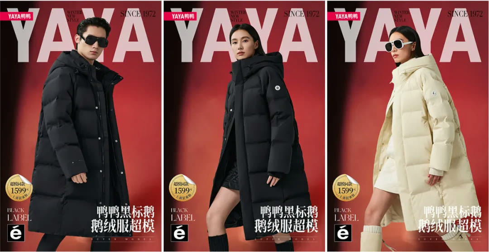
黑标鹅凭借超模面孔和超模身材，进一步放大了羽绒服的“超模剪裁”价值，通过冷峻、疏离的情绪和眼神，配合大张力的肢体动作，视觉上突出羽绒服的超模版型——利落剪裁自然拉长身形比例，穿上自带超模气场。超冷天气：极地硬核美学超冷天气对应的是极端严寒，气温可低至零下 30 度以下。消费者的核心诉求，已经不是日常保暖和时尚感，而是硬核防护、极地级抗寒，要扛得住严寒。那么超冷系列的详情页设计，要用真实的极地场景，建立强烈的信任感。鸭鸭开发了兼具工装风和抵御极寒的「鸭鸭珠峰 1992 」系列，创意口号“鸭鸭珠峰 1992 ，御寒新高度”。产品命名和口号都直接寄生在“珠峰”这一人类极限挑战的文化母体上，让消费者有最直观的极寒环境的联想。
1 ）在详情页的设计上：我们将模特的拍摄场景，设定为天寒地冻的高峰地带，皑皑雪山，凛冽寒风，呼出的白气瞬间凝结。2 ）在场景上：呼应「珠峰」系列主题形成强呼应，让消费者隔着屏幕，都能感受到那股刺骨的冷。3 ）在模特的穿搭和妆造上，视觉的重中之重：专业级的登山装备、防风护目镜、加厚手套；面部被冻得发红，鼻尖和睫毛沾着真实的冰碴，这是精心设计的“冻伤妆”，活灵活现地呈现极寒氛围，仿佛刚从暴风雪中走出来。4 ）在画面的字体和图标上：采用了“冻得结实”的冰质感设计：字母边缘带着冰凌的锯齿感，仿佛是从冰山上凿下来的。5 ）在动作设计和情绪表达上：强化“硬核”属性：模特手持登山杖，弯腰顶风前行，姿态沉稳而坚定，模特的情绪是沉着、坚韧的，带着对自然的敬畏。每个眼神都在说：“我能站在这里，靠的就是身上这件。”
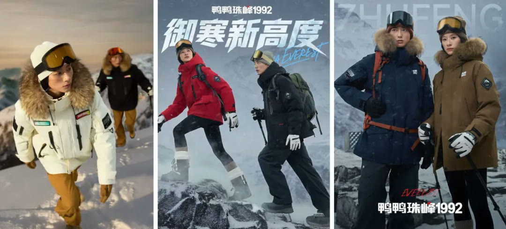
鸭鸭地铁大广告：定义羽绒服货架，设计羽绒服热销榜单线下广告的核心挑战，是让品牌在地铁、机场、高铁的嘈杂环境中“被看见”。每年鸭鸭在销售旺季，选择投放大规模的全国地铁广告，地铁通道现场干扰极大，路人匆匆而过，一旦刺激信号失效，就迅速被淹没。我们发现，市面上很多服装广告画面，明明是服装广告，却只能看到一张精致的明星脸，衣服都看不全。这就属于没有“破心中贼”，感觉有留白才高级，够高冷才奢侈，把广告当成了明星写真来设计，但是却不卖货。鸭鸭的地铁广告画面，我们用“货架思维”规划画面的内容，即把所有广告位视为一个“展示货架”。
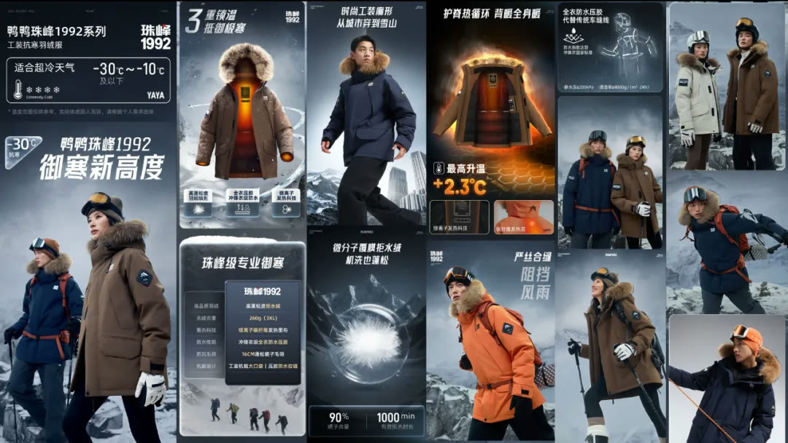
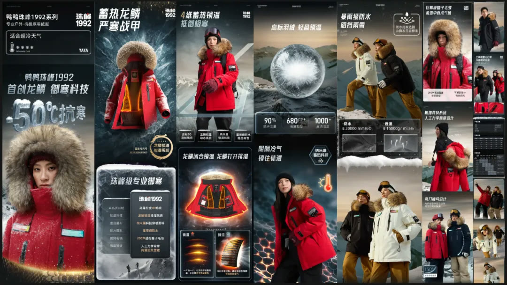
我们像设计菜单一样，设计鸭鸭的广告。每张广告就是一份“鸭鸭羽绒服精选菜单”，展示多个年度爆款。每款都像一道“招牌菜”，清晰标注产品系列名，消费者看上哪个款，就一键搜索下单。
1 ）在画面整体配色上：我们采用大量高饱和、多巴胺的色块，充当地铁立柱和灯箱的背景，从而主动刺激人的情绪视觉信号。
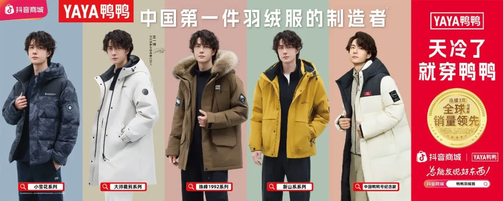
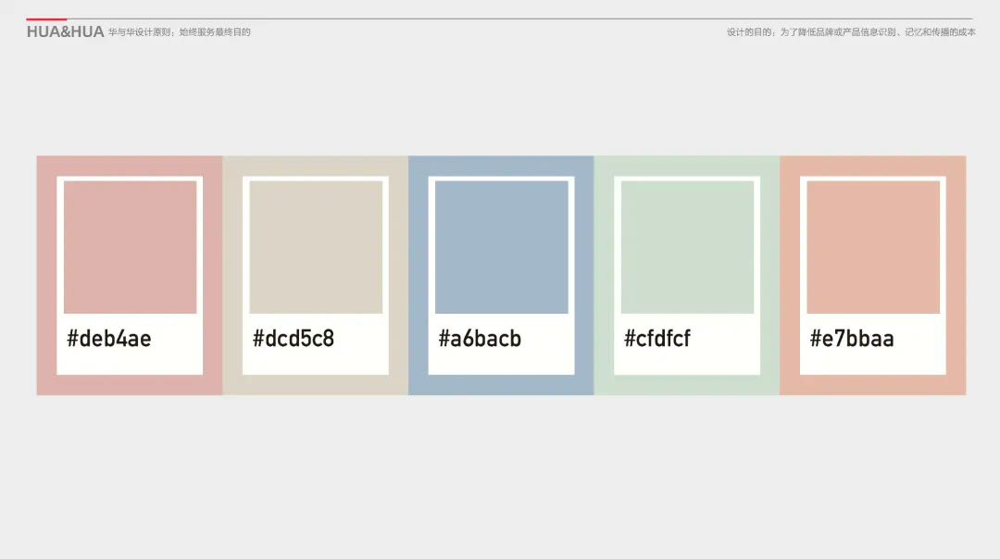
羽绒服行业广告通常是厚重、深色系的，而多巴胺配色以愉悦、明亮温暖的色调，在寒冬里用色彩冲击力，展示鸭鸭时尚百变的年度新品。2 ）在鸭鸭的每张广告单元上，都提供三个购买：购买理由、购买指南、购买指令。我们亮出“中国第一件羽绒服的制造者”、“连续 3 年全球羽绒服销量领先”的强势背书，释放最强刺激信号。用“天冷了，就穿鸭鸭”下达购买指令，结合醒目的折扣信息，让鸭鸭的广告，成为产品畅销榜，铺满全国的大街小巷。
总结在过去的 5 年中，华与华以“超级符号”、“文化母体”的方法，完成了对鸭鸭的视觉、策略、传播的多维度重塑。
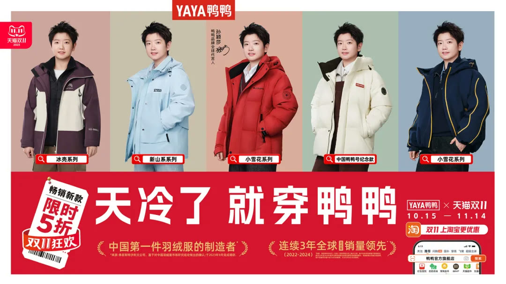
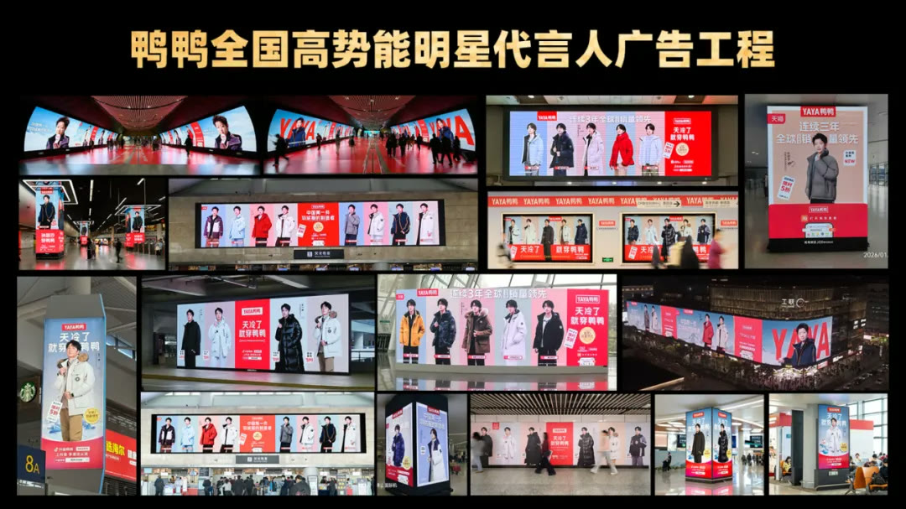
从 YAYA 国际化的极简 LOGO ，到明星代言人“杂志封面”海报，再到不同产品系列情景化的详情页，以及年度爆款榜单式的全国地铁广告，是对传统羽绒服品牌的时尚焕新，让鸭鸭走向更大的全球化舞台。